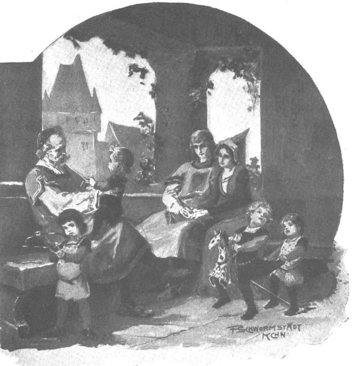

Vào năm thứ năm, khi trật tự chặt chẽ ở các trang ấp đã được thiết lập, khi lá cờ với biểu tượng Móng Ngựa Cùn phấp phới trên cái tháp canh vừa hoàn thành được mấy tháng, và Jagienka hạnh phúc sinh hạ đứa con trai thứ tư được đặt tên là Jurand, thì một hôm ông Maćko bảo Zbyszko:
- Chúa đã ban cho mọi thứ tốt đẹp, và nếu Chúa Giêsu ban cho một điều hạnh phúc nữa thôi thì chú có chết cũng an lòng.
Zbyszko nhìn ông bằng ánh mắt dò hỏi, lát sau chàng hỏi lại:
- Chắc chú định nói về cuộc chiến với bọn Thánh chiến, chứ chú cần gì hơn nữa?
- Chú vẫn nói với anh như trước đây, - ông Maćko nói, - rằng khi nào đại thống lĩnh Konrad còn sống, thì sẽ không có chiến tranh.
- Ông ta sống mãi được à?

Jagienka hạnh phúc sinh hạ đứa con trai thứ tư, được đặt tên là Jurand
- Cả chú cũng không sống mãi, đó là lý do tại sao chú nghĩ về một điều khác.
- Điều gì ạ?
- Tốt nhất là đừng nói. Chú định đi Spychow, và có thể nhân thể ghé thăm các quận công ở Plock và Czersk.
Zbyszko không mấy ngạc nhiên, bởi vì mấy năm vừa qua ông Maćko đã đến Spychow nhiều lần, vì vậy chàng chỉ hỏi:
- Chú định đi lâu không?
- Lâu hơn bình thường, chú sẽ ở lại Plock một thời gian.
Thế là một tuần sau ông Maćko lên đường, mang theo vài chiếc xe và bộ giáp phục tốt, “phòng trường hợp có dịp thi đấu trên đấu trường”. Lúc ra đi ông tuyên bố rằng sẽ có thể đi lâu hơn bình thường, và thực sự ông đã đi lâu hơn, vì suốt nửa năm không có tin tức gì về ông. Zbyszko bắt đầu lo lắng và cuối cùng chàng đã gửi một gia nhân đến Spychow, nhưng người này gặp ông Maćko ngay sau thành Sieradz và cùng ông quay trở về.
Lão hiệp sĩ trở về mặt mày u ám, nhưng sau khi hỏi kỹ Zbyszko về những gì xảy ra trong thời gian ông vắng mặt, và hài lòng rằng mọi thứ đều ổn, ông vui hơn một chút và bắt đầu kể về chuyến đi của mình.
- Anh biết là chú đã đến thành Malborg. - Ông nói.
- Đến Malborg ạ?
- Chứ đâu nữa?
Zbyszko ngạc nhiên nhìn ông một lúc, rồi bất ngờ dập tay lên dùi, nói:
- Trời ơi! Thế mà cháu quên mất.
- Anh có thể quên vì đã thực hiện lời thề của anh, - ông Maćko bảo, - nhưng xin Chúa, đừng để chú đã thề mà lại không giữ lời. Họ nhà ta không có thói bỏ qua kẻ thù - cầu thánh giá thiêng liêng trợ giúp, khi nào còn thở, chú sẽ không bao giờ tha cho hắn.
Nói tới đây, khuôn mặt của ông Maćko trở nên đáng sợ và bạo liệt, như vẻ mặt mà Zbyszko đã từng thấy một lần vào thời xa xưa ở chỗ đại quận công Witold và quận công Skirwoiłło, trước khi lâm trận với bọn Thánh chiến.
- Thế rồi sao? - Chàng hỏi. - Hắn có thoát được không?
- Hắn không nhận lời thách đấu của chú.
- Tại sao?
- Hắn lên chức tổng lãnh binh.
- Kuno Lichtenstein lên chức tổng lãnh binh à?
- Ha! Hắn có thể được bầu làm đại thống lĩnh chứ chẳng chơi. Biết đâu đấy! Nhưng bây giờ thì hắn ngang vai với các vị quận công rồi. Người ta nói rằng bây giờ hắn điều hành tất cả mọi người, mọi thứ của dòng tu đều nằm trong đầu hắn, và đại thống lĩnh không thể làm gì nếu không có hắn. Địa vị ấy thì làm sao nhận lời thách đấu tay đôi! Chỉ để người ta cười.
- Họ dám cười chú à? - Zbyszko hỏi, mắt đột nhiên lóe ánh giận dữ.
- Quận chúa Aleksandra thành Plock đã cả cười mà bảo: “Nhà ngươi đi mà thách đấu hoàng dế Thánh chế La Mã! Theo chỗ ta biết, cả ông Zawisza Czarny, Powała lẫn Paszko xứ Biskupice cũng đều đã gửi lời thách đấu ông ta (ý là Lichtenstein), nhưng ngay cả với các hiệp sĩ ấy, ông ta cũng không trả lời, bởi ông ta không thể. Ông ta không thiếu trái tim, chỉ có điều là quan chức của Giáo đoàn và nói cho đúng, ông ta có địa vị rất quan trọng và cao sang, không hơi đâu mà để ý những chuyện ấy - nếu nhận lời thách đấu, ông ta sẽ bị mất danh dự hơn là bỏ qua, không để ý? Đó là những gì quận chúa nói với chú.
- Thế chú nói gì?
- Chú buồn vô cùng, nhưng chú nói là phải tới thành Malborg để có thể nói với Đức Chúa và người đời: “Tôi đã làm tất cả những gì có thể.” Chú đã xin quận chúa hãy nghĩ ra một việc gì đó và viết một lá thư để cho chú cầm tới Malborg, vì chú biết nếu không sẽ khó mang được đầu mình khỏi cái ổ sói ấy. Chú nghĩ thầm trong bụng: “Ngươi không muốn nhận lời thách đấu của ông Zawisza, Powała hay Paszko, nhưng nếu bị ta túm lấy râu mà giật đứt ngay trước mặt đại thống lĩnh, các lãnh binh và khách khứa, thì chắc ngươi phải đấu với ta.”
- Chúa phù hộ cho chú! - Zbyszko nhiệt thành kêu lên.
- Chứ sao? - Lão hiệp sĩ nói. - Có cách cho mọi thứ, chỉ cần có đầu óc. Nhưng lần này Chúa Giêsu không thương tình, vì chú không gặp hắn ở Malborg. Người ta bảo rằng hắn đang đi sứ đến chỗ đại quận công Witold. Lúc ấy, chú chẳng biết phải làm gì: chờ hắn về hay đuổi theo hắn. Chú sợ nhỡ bị trượt mất hắn. Nhưng vì hồi trước có quen với đại thống lĩnh và chánh quản quân nhu, chú hé cho họ biết lý do thật sự đã khiến chú đến đây - họ bảo rằng đó là điều không thể.
- Tại sao?
- Thì nguyên nhân như quận chúa đã nói đấy. Đại thống lĩnh hỏi: “Ngài sẽ nghĩ sao về tôi nếu tôi chấp nhận đấu với bất cứ hiệp sĩ nào từ Mazowsze hoặc Ba Lan đến?” Chà, ông ta có lý, bởi vì nếu thế thì ông ta đã lìa đời từ lâu. Khi đó mọi người đang trò chuyện bên bàn ăn tối, cả đại thống lĩnh lẫn chánh quản quân nhu đều rất ngạc nhiên. Chú nói anh nghe, đúng là chọc vào đõ ong! Đặc biệt là trong số những vị khách, một nhóm đứng phắt dậy, thét lên: “Kuno không thể, nhưng chúng tôi có thể!” Chú đã chọn ba người trong số họ, định đấu tay đôi với từng người một, nhưng sau những lời cầu xin, đại thống lĩnh chỉ cho phép đấu với một người, cũng có họ Lichtenstein và là họ hàng với lão Kuno.
- Rồi sao hả chú? - Zbyszko kêu lên.
- Thì chú đã mang về đây giáp phục của y, nhưng nó bị nứt gãy cả rồi, đến mức không ai muốn trả một xu để mua lại.
- Lạy Chúa, thế là chú đã thực hiện được lời thề!
- Lúc đầu chú vui vì cũng nghĩ thế, nhưng sau đó chú lại nghĩ: “Không! Không giống nhau!” Và bây giờ chú không yên lòng, chính vì nó không như nhau!
Zbyszko an ủi ông:
- Chú cũng biết là cháu không hề xem nhẹ những chuyện như thế hơn chú hay bất cứ ai khác, nhưng nếu nó xảy đến với cháu, thì thế đã là đủ. Cháu xin nói với chú, có các hiệp sĩ vĩ đại nhất ở Kraków làm chứng. Bản thân ông Zawisza, người hiểu rõ nhất về danh dự của hiệp sĩ, có lẽ sẽ không nói gì hơn.
- Anh nói thế thật à? - Ông Maćko hỏi.
- Chú nghĩ thử xem: họ lừng danh khắp thiên hạ, họ cũng đã thách đấu với hắn, thế mà không ai làm được nhiều như chú. Chú thề là sẽ giết Lichtenstein - và đã hạ một tên Lichtenstein đấy thôi.
- Có lẽ thế. - Hiệp sĩ lớn tuổi nói.
Còn Zbyszko, người vẫn ham chuyện về hiệp sĩ, hỏi lại:
- Bây giờ chú nói xem, hắn trẻ hay già? Chú hạ hắn trên ngựa hay trên bộ?
- Hắn ta ba mươi lăm tuổi, râu dài đến thắt lưng, cưỡi ngựa. Chúa đã giúp chú, chú đấu bằng trường thương, rồi chuyển sang kiếm. Nói anh biết, máu từ miệng hắn tuôn ra ướt sũng cả bộ râu.
- Thế mà chú còn phàn nàn là chú già ư?
- Cứ cưỡi lên lưng ngựa hoặc nhảy nhót trên mặt đất, chú vẫn ngon lắm, nhưng nếu mặc cả bộ giáp thì chú không nhảy nổi lên yên ngựa được nữa.
- Nhưng chính gã Kuno cũng sẽ không địch nổi chú.
Ông lão phẩy tay khinh bỉ, ra hiệu rằng với lão Kuno sẽ dễ hơn nhiều, rồi họ đi xem bộ giáp phục thu được, mà ông Maćko chỉ mang về làm chứng tích chiến thắng, vì nó đã nát bươm và do đó không còn giá trị. Chỉ có giáp che hông và ống chân được chế tạo tinh xảo là còn nguyên vẹn.
- Chú vẫn muốn đó là gã Kuno. - Ông Maćko buồn rầu nói.
Còn Zbyszko bảo:
- Chúa biết điều gì là tốt hơn. Nếu Kuno lên chức đại thống lĩnh, chú sẽ không thể đấu được với hắn, trừ phi là trong một trận đại chiến nào đó.
- Chú sẽ nói anh nghe những gì người ta đồn. - Ông Maćko nói. - Một số người bảo kế vị Konrad sẽ là Kuno, còn những người khác bảo rằng sẽ là Ulryk, em trai Konrad.
- Cháu muốn là Ulryk. - Zbyszko nói.
- Cả chú cũng muốn thế, anh biết tại sao không? Tại vì Kuno thông minh và khôn khéo hơn, còn Ulryk thì nóng nảy hơn. Đó là một hiệp sĩ chân chính, trọng danh dự, nhưng sợ chiến tranh với chúng ta đến phát run. Người ta đồn rằng một khi y trở thành đại thống lĩnh, thì sẽ có cơn bão tuyết chưa từng có trên đời kéo đến ngay. Còn Konrad thì hình như thường bị ngất xỉu. Một lần, ông ta đã bị xỉu ngay cạnh chú. Hey! Có lẽ chúng ta sẽ đợi được đến lúc ấy.
- Xin Chúa ban cho! Thế có chuyện gì mới với vương quốc ta không?
- Có cả chuyện cũ lẫn chuyện mới. Bọn hiệp sĩ Thánh chiến bao giờ cũng vẫn là Thánh chiến. Mặc dù biết rằng ta mạnh hơn, gây sự với ta sẽ không hay, nhưng chúng vẫn không thôi rình rập ta, vì chúng không thể khác được.
- Chúng vẫn nghĩ rằng Giáo đoàn mạnh hơn tất cả các vương quốc.
- Không phải tất cả, nhưng nhiều kẻ trong bọn chúng, kể cả Ulryk, nghĩ thế. Bởi vì quả thực sức mạnh của chúng thật kinh khủng.
- Chú còn nhớ hiệp sĩ Zyndram xứ Maszkowice nói gì không?
- Chú nhớ, và ở đó mỗi năm một tệ hơn. Anh em ruột cũng không đón nhau nhiệt tình như họ vừa đón chú ở đó, trong khi không ai thèm nhìn đến đám hiệp sĩ Thánh chiến. Mọi người đều đã quá chán ghét chúng rồi.
- Thế thì chắc chẳng phải chờ lâu nữa đâu!
- Không lâu, hoặc sẽ lâu. - Ông Maćko nói.
Và sau một lúc suy tư, ông nói thêm:
- Mà phải làm việc chuyên cần, tăng nhanh tài sản để có thể ra trận thật đàng hoàng.